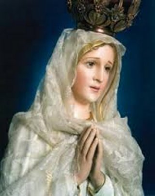
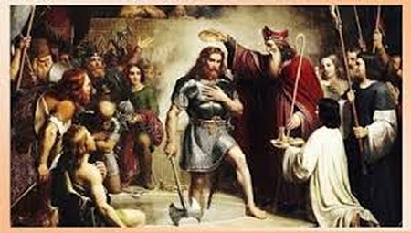
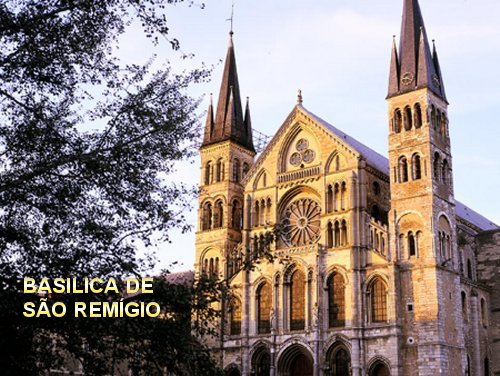

"PREOCUPAÇÃO AMOROSA"
CONVERSÃO DE CLÓVIS
Por fim chegou à hora da Providência. Em pleno andamento do ano 496, quinze anos após a sua ascensão ao comando do seu país, a Rainha Clotilde inspirada pelo ESPÍRITO SANTO, convidou São Remígio para vir ao palácio em segredo, com o objetivo de conversar com Clóvis e incutir no Rei a verdade sobre a salvação da alma. E o Bispo com disposição aceitou o convite e veio imediatamente encontrar Clóvis. A conversa foi amistosa e direta, permitindo que a verdade finalmente entrasse e formasse um baluarte naquele coração guerreiro. O Santo Bispo instruiu o Rei nas verdades da Fé Cristã, falou-lhe sobre NOSSO SENHOR JESUS CRISTO, sobre a impressionante Obra que JESUS realizou, para a salvação da humanidade de todas as gerações. Os olhos de Clóvis acompanhavam a grandeza do relato, hora se abria mais intensamente, hora cheio de ternura, quase se fechava de tão embevecido que estava com aquelas palavras e revelações de São Remígio. Quando o Bispo lhe relatou a coragem de JESUS, que para consolar o CORAÇÃO DO PAI ETERNO, derramou o SEU Divino e Sagrado Sangue na Cruz, como derradeiro ato para Salvar a humanidade de todas as gerações, enfrentando uma terrível, dolorosa e abominável Paixão, Clóvis com energia e cheio de cólera, deu um soco na mesa, falando: “Por que eu não estava lá com meus francos para acabar com aqueles judeus”? Sem dúvida, foi o início da conversão de Clóvis.
Como sempre, o Rei estava à frente do seu exército e foi enfrentar outros bárbaros, os Alamanos, nas proximidades de Tolbiac. Os Francos, que estavam tão acostumados à vitória, diante de grande resistência, foram surpreendidos pela tática do inimigo e assim, acossados pelos alamanos com tal vigor, que começaram a recuar. A batalha parecia perdida. Prevendo o desastre, um conselheiro do Rei, que era cristão, aproximou-se e lhe sugeriu que invocasse o verdadeiro DEUS naquele transe difícil. Clóvis lembrou-se das palavras do Bispo e os conselhos da sua querida esposa, e então prometeu “ao DEUS de Clotilde que se converteria à Religião Católica, caso obtivesse a vitória. No mesmo momento, os Francos criaram uma grande coragem e se voltaram contra os Alamanos com tal ímpeto, com tal força e garra, que romperam todas as suas linhas e chegaram até seu Rei, e o mataram. A batalha estava ganha.
O Rei Clóvis, que era muito leal, não tardou em cumprir a sua promessa. Assim que retornou, mandou chamar São Vedasto, Bispo de Toul, para instruí-lo na fé. Sua esposa Clotilde também se apressou em chamar São Remígio para completar a obra de instruir-lhe devidamente e por fim, administrar-lhe o Sacramento do Batismo. São Remígio chegou e acabou de lhe abrir os olhos e de lhe mostrar a excelência e santidade dos mistérios cristãos. Então, aconteceu outro admirável milagre, que fez realçar o ardor da fé e da religião de modo tão piedoso, que iluminou tão fortemente aquele coração marcial, fazendo com que Clóvis se tornasse apóstolo de seus vassalos antes de receber o Batismo e ser um verdadeiro cristão; ele reuniu os grandes da sua corte, mostrou-lhes a loucura e a extravagância do culto aos ídolos, e conclamou-os a não mais adorar senão a um só DEUS, criador do Céu e da Terra, na TRINDADE SANTÍSSIMA. Fez o mesmo com o seu exército; sua pregação foi tão poderosa que os soldados decidiram acompanhá-lo, exaltados e com sobrenatural entusiasmo, compreendendo o avanço definitivo do seu Chefe a conversão do coração. E todos a uma só voz repetiram: “Nós rejeitamos os deuses e suas crendices, piedoso Rei, e estamos prontos a seguir o DEUS Imortal que o senhor Bispo Remígio anuncia para todos”. Mais de 3.000 soldados Francos se prepararam para imitar o digno e correto exemplo do seu Rei, e receberem o Batismo.
REMÍGIO, NÃO TEMAS!

Entretanto, preocupado com todas as providências, embora ciente de que tudo tinha sido preparado conforme a vontade dele, na noite da véspera do acontecimento, Remígio tremia de emoção, de dúvidas e de cansaço. No meio das perguntas que assolavam a sua mente, o coração bateu forte e fez surgir uma preocupação fazendo-o tremer e quase cair. Com o Terço na mão sentou-se na cama e com as lágrimas descendo pela face, sentiu a tentação forçar a sua mente repetindo: “Em seu grande empenho pela conversão do Rei Franco, trabalhara de fato e exclusivamente para a glória de DEUS? Ou teria se esforçado, movido apenas por meras preocupações terrenas”? Ele triste, com as lágrimas descendo pela face, olhou para uma imagem de NOSSA SENHORA na mesinha do seu quarto, e com as mãos em oração falou: “MÃE querida, a SENHORA conhece todos os segredos do meu coração. A Senhora sabe que eu amo o nosso DEUS! Tudo o que faço sempre vai acompanhado do meu desejo sincero de servi-LO.” Rezava assim, ao mesmo tempo em que a emoção envolvia o seu corpo e as lágrimas se tornaram caudalosas... Porém, de súbito, um poderoso raio de luz fez brilhar completamente o seu pequeno quarto pouco iluminado, e uma voz forte e incisiva, ordenou:“Remígio, não temas!” E numa visão, logo a seguir, ele pode contemplar as gloriosas consequências desse Batismo, para a Gália e para a Igreja. Sim, aquele acontecimento ia dar origem a uma nação eleita, que viria a ser durante séculos sustentáculo da Igreja e contribuiria primordialmente para o florescimento do Cristianismo. E então, diante do olhar maravilhado do senhor Bispo Remígio, passou um desfile de guerreiros magníficos, alguns deles Santos que colocaram sua espada a serviço da Fé. O desfile acontecia no espaço do seu pequeno quarto, não numa tela. Embevecido apreciava tudo cheio de emoção. Todavia, além desta cena maravilhosa sucederam outras de desolação: o triste espetáculo das infidelidades desse povo predestinado, afundando no pecado e no esquecimento de DEUS. E, enquanto imerso naquelas imagens, entre o júbilo e o horror, outra voz cheia de suavidade e doçura, sussurrou aos seus ouvidos: “Não tenhas medo, porque EU estou aqui, sempre presente, e vigio”.
Remígio ficou tranquilo e sorriu. Compreendeu que podia caminhar sereno, sem preocupações, na certeza de que aquele será um momento histórico, e também, estava certo de poder contar com o auxílio mais precioso vindo de DEUS. A SANTÍSSIMA VIRGEM MARIA, MÃE sempre bondosa e repleta de cuidados, estaria presente e olharia pela jovem nação dos Francos.
PAI, ESTE JÁ É O REINO DE DEUS?
São Remígio quis que a cerimônia
do Batismo Real fosse cercada de toda pompa. Segundo a tradição, realizou-se na
noite de Natal. O caminho do Palácio 
A cerimônia transcorreu com a maior solenidade possível. Na pia batismal, São Remígio disse àquelas palavras que se tornaram célebres: “Curva a cabeça, altivo homem; queima o que adoraste e adora o que queimaste”.
O Cardeal Barônio nota que, além do Batismo, São Remígio conferiu também a Clóvis a Unção Real, o que depois se tornou uma tradição entre os Reis da França. A Igreja estava tão repleta, que o Clérigo que devia levar o Óleo da Crisma ficou retido pela multidão. Simplesmente ele não conseguia passar.
Então São Remígio elevou os olhos a DEUS, e nesse momento viu-se uma alvíssima pomba trazendo no bico uma “Ampola com o Óleo” e depositou nas mãos do Prelado. Essa é a origem da “Santa Ampola” que serviu até a Revolução Francesa, para sagrar os Bispos Gauleses.
Também uma irmã de Clóvis, a princesa Albofleda e o seu filho menor Thierry, nascido no primeiro matrimônio de Clóvis, foram batizados com ele, além de um número incalculável de senhores e uma infinidade de soldados, mais de 3.000 homens, além de mulheres e crianças que quiseram seguir o exemplo do seu Rei.
Este Batismo, foi a graça que faltava para conduzir os Francos à conversão espiritual à Igreja Católica. Desse modo, foi um precioso e gigantesco marco para o Cristianismo, e um dos acontecimentos mais importante na história da Europa.
SOLIDIFICOU UM BOM RELACIONAMENTO
O Bom relacionamento que existia entre o Rei Clóvis e o Bispo Remígio, depois do Batizado se consolidou e ampliou muito mais. O Bispo sempre atendendo e apoiando o Rei nas decisões mais importantes, e Clóvis ajudando os cristãos, concedeu a Remígio excelentes terrenos, nos quais foram construídas muitas Igrejas, onde também foram implantados Bispados em Tournai, Cambraia, Thérouanne, locais onde Remígio, agora Arcebispo de Reims, pessoalmente ordenou o primeiro Bispo em 499. Em Arras, ele instalou o Bispo São Vedasto; e em Laon, Remígio ofereceu a Diocese e instalou o Bispo Gumbando, marido da sua sobrinha. Em 530, o Arcebispo Remígio consagrou Medardo, Bispo de Noyon; também consagrou o seu irmão Princípio, Bispo de Soissons. Além de todo este trabalho, edificava e espalhava o Cristianismo naquele mundo pagão de muitas maneiras, sobretudo erradicando a idolatria e anunciando em todos os locais o Evangelho de NOSSO SENHOR JESUS CRISTO. E ainda, teve oportunidade de se corresponder com amigos e pessoas importantes como o grande poeta cristão Sidônio Apolinário, cujas cartas denotam um sentido literário galo-romano altamente culto, compartilhado entre eles.
NASCEU UMA GRANDE NAÇÃO
Pela Vontade Divina ele continuou trabalhando firme, por muitos e muitos anos, implantando o Cristianismo na Gália. Então, com seu carinhoso jeito pessoal e sua santidade simples e humilde, estava com o coração sempre aberto; todas as pessoas que se aproximavam do Arcebispo Remígio, saíam sorridentes e beneficiadas; pagãos se convertiam; brigões se apaziguavam nos raciocínios honestos e sinceros do Prelado; Cristãos sadios, recebiam o pão da Doutrina para consolidar a própria fé; os hereges sentiam vergonha de si mesmos e até abjuravam os próprios erros. Então, os Bispos e os religiosos em geral, seus companheiros de trabalho, sentiam-se animados e até mais motivados a continuar na companhia dele, a propagar fervorosamente o Cristianismo alargando suas fronteiras, tornando a Gália Romana um verdadeiro país cristão a serviço da humanidade. Nesse imenso território surgiu a França.
MORTE DE REMÍGIO
Foram muitos os atos do Rei Clóvis convertido que revelaram a sua religiosidade autêntica, dotada da caridade cristã. Porém o mérito maior deve ser dado ao Arcebispo Remígio, pois foi o resultado do seu árduo e ininterrupto trabalho de evangelização que fortaleceu os alicerces do catolicismo no território francês. O Arcebispo de Reims ensinou não apenas aos Reis e Príncipes do seu tempo, mas também aos camponeses e a todos os súditos do novo reinado.
Nos últimos anos da sua vida, aquele corpo trabalhador e fiel, foi sendo preparado para uma eternidade infinitamente feliz nos braços do Redentor. A forte e incomparável saúde do seu corpo durante a realização da sua missão existencial foi substituída aos poucos, pelas dores, as doenças e os sofrimentos da carne. Lembrou-se dos sofrimentos de JESUS na conclusão da SUA Incomparável e Magnífica Obra de Amor, aceitando morrer na CRUZ pela SANTÍSSIMA VONTADE DO PAI, para Redimir a humanidade de todas as gerações. Desse modo NOSSO SENHOR derramou o SEU Precioso e Sagrado Sangue em benefício da alma de todas as pessoas. Isto independentemente do pedido e da vontade de cada uma. Por SEU Divino e Misericordioso Amor, escancarou as Portas do Paraíso de DEUS para todos que o amam e que são Seus Verdadeiros Amigos. Então, à medida que as dores e os sofrimentos chegavam a Remígio, a sinceridade do seu apaixonado e fiel amor a DEUS furtivamente sorria, compreendia também que estava participando da Cruz de NOSSO SENHOR, e que por isso mesmo, tinha plena convicção que o seu encontro com JESUS estava cada vez mais próximo. Finalmente a sua alma partiu para a eternidade no ano 530, falecendo nonagenário, com 93 anos de idade, depois de uma longa e brilhante trajetória de 70 anos no Ministério Episcopal.

Ele foi sepultado na pequena Igreja de Saint-Christophe (São Cristovão, hoje é a Basílica de São Remígio). Em 852, Hincmar, também o principal autor de suas biografias, procedeu à coleta de suas relíquias, das quais, ele levou uma parte mínima para Sainte-Marie de Reims. A caixa foi levada para Épernay abrigada das invasões normandas em 882 e foi solenemente devolvida em Junho de 883 a Sainte-Marie. Em 900, o Arcebispo Hervé devolveu as relíquias a Basílica de São Remígio, onde foram veneradas até a Revolução Francesa. O corpo do Santo foi preservado intacto.
A festa de São Remigio é celebrado na França no dia 15 de Janeiro; e em Roma no dia 13 de Janeiro conforme Martirológio Romano. Na Diocese de Reims é festejado no dia 1º de Outubro, sendo festejado de acordo com a tradição local que remonta ao final do século VI.
São Remígio Apóstolo dos Francos, foi um dos mais extraordinários Bispos na História do Cristianismo, dentre os que se dedicaram ao Apostolado com os Bárbaros, desempenhando um papel decisivo na conversão de Clóvis I Rei dos Francos, e de todo o seu povo.
NOTÍCIAS INTERESSANTES
LENDA DOS DOIS FRASCOS DE ÓLEOS
1 - São Remígio é também conhecido pela lenda do Batismo de um moribundo pagão. O homem foi se encontrar com o Bispo e pediu para ser Batizado. Então, foi constatado que não havia na Igreja Óleo dos Catecúmenos ou da Crisma disponíveis para a cerimônia de Batismo. São Remígio ordenou que colocassem dois frascos vazios no altar, e foi rezar diante de uma imagem de JESUS Crucificado que tinha aos seus pés, uma imagem de NOSSA SENHORA. Após orar diante das imagens, os dois frascos foram milagrosamente preenchidos, com os necessários Óleo dos Catecúmenos e da Crisma. E assim foi realizado o Batizado.
2 – Após a morte do Arcebispo Remígio, e quando foi aberto o sepulcro contendo o corpo dele, no Reinado de Carlos, o Calvo, o Arcebispo Incmaro que era o Arcebispo de Reims, viu dois pequenos frascos que foram encontrados junto ao corpo, cujo conteúdo exalava um perfume aromático não reconhecido pelos presentes. Mas naquela época em que Remígio morreu, a antiga arte da perfumaria ainda não era praticada na Gália, atual França. Então, estes frascos podem ter sido, originalmente, as duas garrafas contendo unguentos, que eram comumente usados para cobrir o cheiro do cadáver durante o funeral. Mas a memória dos dois frascos milagrosamente preenchidos para o Batizado do homem moribundo pagão, e o incomum, aparentemente sobrenatural aroma desses dois frascos que foram encontrados ao lado do corpo de São Remígio, sugeriram que eles devem ser os mesmos frascos milagrosamente preenchidos como narra a lenda.
Com a lembrança deste acontecimento, devemos recordar, que naquela época, não era incomum que cálices e outros vasos sagrados fossem enterrados junto a corpos de importantes Clérigos (autoridades religiosas).
3 - O Arcebispo Incmaro habilmente combinou a descoberta dos dois frascos encontrados junto ao corpo de Remígio, com a Lenda do moribundo pagão, juntando também, a memória histórica de que São Remígio batizou Clóvis, com a Santa Ampola (isto é, o Óleo utilizado por Remígio quando Batizou Clóvis foi milagrosamente fornecida pelo Céu). O Arcebispo Incmaro usou a nova lenda para reforçar a sua afirmação de que a Arquiepiscopal de Reims (era possuidora dessa Crisma Celestial) e por isso, deveria ser reconhecida como o local Divinamente escolhido para todas as unções dos Reis Franceses. O destino do segundo frasco é incerto. Tem sido sugerido que, recordando a lenda, este teria sido o frasco que contém o Óleo dos Catecúmenos, e por essa razão, as Coroações Francesas ordenam a prescrição do Óleo dos Catecúmenos, ao invés do Óleo da Crisma, que posteriormente, foi utilizada para ungir as Rainhas da França. É possível que um segundo frasco atualmente identificado por alguns dos legitimistas da Casa Bourbon, seja na verdade a Santa Ampola.
A SANTA AMPOLA OU AMPOLA SAGRADA
É uma preciosa relíquia que, segundo a tradição, foi entregue por uma pomba na época do batismo de Clóvis I por São Remigio na Catedral de Reims. Era uma garrafa de pequenas dimensões que continha a Crisma que era necessária a cerimônia e que devido à multidão que rodeava os oficiantes não foi possível chegar as suas mãos. Esta relíquia foi usada para consagrar quase todos os Reis da França até a Revolução Francesa. Mas, por causa de seu significado religioso e político, foi destruído e apenas fragmentos puderam ser recuperados.